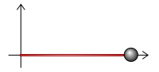
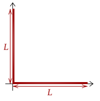
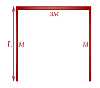
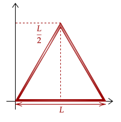
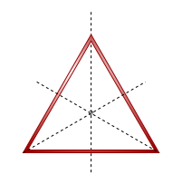

Surprisingly, with just the integral at hand, we can get the center of mass of any composite object. Of course, we will start simple. Below is a composite object, consisting of a thin rod and a mass on one end.
To deal with this composite object, we will note the definition of the center of mass. We defined it such that it is a particle wherein all the mass of the object is at. Thus, if we have the center of mass of a solid object, it can be used as a particle.
So, to get the center of mass of a composite object, it is like breaking it down into simpler, more bitesized rigid objects, getting the center of masses of those, and then putting it all together.
Exercise 1
A composite object is shown below, showing a thin rod of length and uniformly distributed mass . A particle of same mass is placed onto the end of the object. Let the end without the mass be at the origin. Where is the center of mass?

Solution
Here, it is useful to first find the center of mass of the rod itself, and then use that to find the center of mass of the entire composite object. For the rod, we have done this before. We once again note the uniformly distributed mass, so we can change the variable of integration.
We will integrate from the origin to the end of the rod.
Now, we get the center of mass of the entire system. The rod can now be approximated as a single particle, and the mass is also a single particle, so we can effectively just use the formula we collected for the center of mass of two particles.
This approach is surprisingly quite versatile. Of course, for now, we can only deal with thin rods, but later we can extend our knowledge to deal with more difficult problems.
Exercise 2
Two identical thin rods of length and uniformly distributed mass are welded together, their corner placed at the origin. One thin rod lies on the x-axis, while the other lies on the y-axis. Where is the center of mass of the object?

Solution
This composite object is made, as said, of two thin rods. To get the center of mass of the object, we first get the centers of masses of the two rods separately, treat them as particles, then get the center of mass of the whole system.
We will skip the derivation of the horizontal thin rod as we have done it before. Without proof, it is shown below.
For the rod in the vertical direction, it follows basically the same procedure. However, instead of the x-component, we are using the y-component instead, since it is vertical. Thus, its center of mass is shown below, without full solution.
Now, since we are working in two dimensions, we have to consider the horizontal and the vertical components seperately. Starting with the horizontal component, we have the following.
The vertical-component goes the same way.
Thus, the center of mass of the object is at .
The above shows another fact that we saw for a system of multiple particles, and that is that the center of mass need not lie on the composite object that we make.
Exercise 3
(HRK E7.13) Three thin rods each of length are arranged in an inverted U, as shown below. The two rods on the arms of the each have mass ; the third rod has mass . Where is the center of mass of the assembly?

Solution
We have three thin rods, so we will note their three centers of masses. We will set our coordinate system to be at the top left corner of the assembly, so the two vertical rods extend downwards into the negative y-direction.
With the three centers of masses, we can now get the center of mass of the entire system. We will start with the x-component.
For the y-component, we have this.
Problem 1
An equilateral triangle shaped assembly is made up of three identical thin rods of length and uniformly distributed mass . Where is the center of mass?

Solution
The centers of masses of the three thin rods are at their midpoints, given they have uniform mass distribution. The midpoint of the horizontal rod at the x-axis is simple enough.
Now, the height of the triangle is, by special right triangles, . We leave this fact to be proven by the most omniscient reader. Eitherway, we now note the two midpoints of the rods.
Great; now, we deal with the x-component of the entire system.
For the y-component of the center of mass, we have the following.
One fun fact about the above problem is that the center of mass of the equilateral triangle actually lies on what is called its

One thing to note is that usually the CM will be the centroid or geometric center of an object. We saw this in a rod; its CM is at the midpoint. Sometimes, however, it isnt the case, such as when the mass is not evenly distributed across the object.